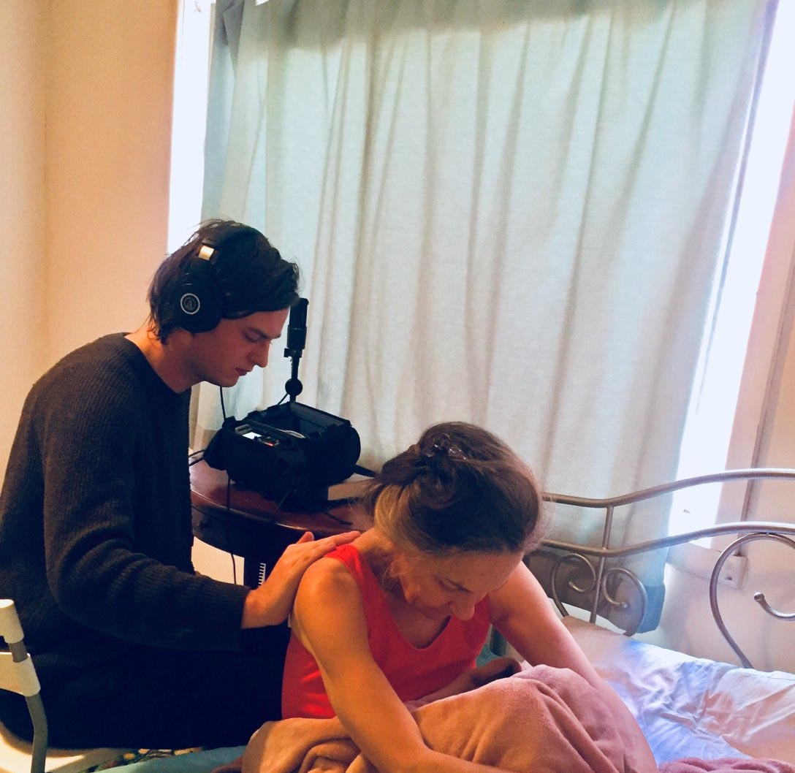
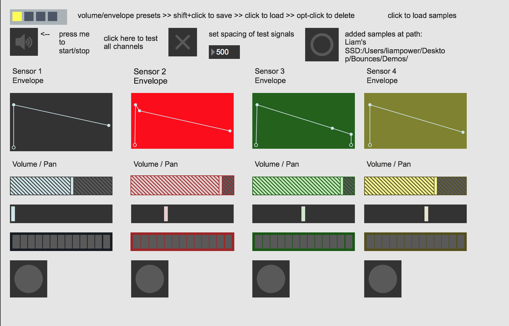

SERVICES
As well as pursuing my arts practice I work as a freelance collaborator on a variety of arts-related projects.
Some projects I have worked on:
Oompah! @ Artplay (2018)
Role: Interaction design, programming, sound design, composition.
Great Movements of Feeling @ Gertrude Contemporary (2018)
Work: Helen Grogan, splitting open the surface on which it is inscribed, 2018
https://www.greatmovementsoffeeling.com/exhibition
Role: Sound Recordist, Mixer
Anticipation is half of the seduction @ Blindside (2018)
Exhibition Site: https://www.blindside.org.au/emerging-curator-mentorship-2018
Role: Sound Recordist, Consultant, Mixer
Primary Skill Sets
Location Sound Recordist:
With a wide array of microphones and professional field recording equipment, I am able to capture and record the best possible audio needed for your project on site.
Specialist Sound Recording
For my own practice and in collaboration, I have a special interest in capturing hard to record or uncommon sound sources.

Recording body sounds
For previous clients I have recorded heart, lung and body sounds, electromagnetic resonances from computers and phones and internal sounds picked up through transduction.

Recording melting ice
Interaction Design and Programming
With a particular knowledge of popular creative arts programming languages such as Max/MSP, Arduino, Processing and p5.js, I can construct a custom tailored interface for your next project.

For past clients I have built MIDI routers, interactive sound sculptures and custom hardware solutions to help them achieve their creative and practical needs.
Live Sound
Coming from a background in Sound Art, my passion lies in creating a mood and atmosphere that helps foreground the source material in a physical space. This often means making decisions on site and in the planning process that will facilitate this.

I have mixed live gigs, experimental art performances and theatre productions.
Mixing and Sound Design
As well as capturing sound on site, I can provide mixing facilities and post-video sync work for small scale projects or individual clients.
Contact
If I could help with any or all of these, please feel free to email, or fill out the contact form below with your enquiry.